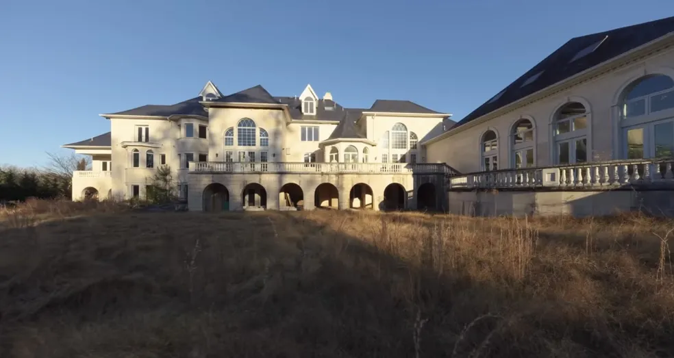
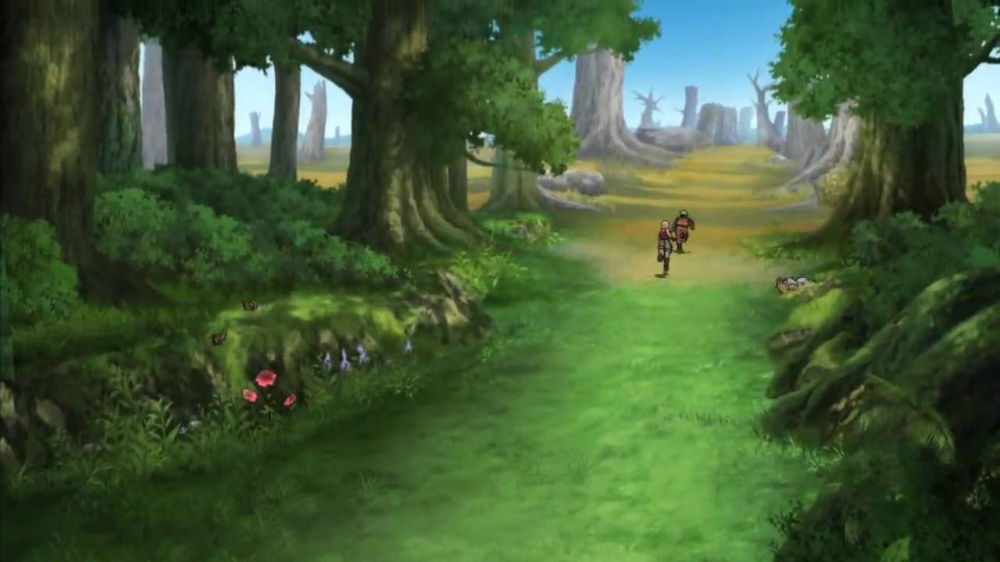

Ansiosa para saber de suas origens,você decise ir atrás de respostas para saber mais de si..
Você começa sua sua aventura em uma enorme mansão a qual foi deixada por seus pais,a qual não era habitada a anos.
Você segue até o lugar indicado pelas pistas deixadas a você e se depara com uma enorme floresta.
No quarto da mansão você acha uma pista onde dizia “procure em Phoenix”.
Você decide que deveria ter ficado em casa a todo momento e volta para sua cidade natal San Diego.
Você fica entrigada(o) com uma arvore bem grande,descobrindo nela um mapa que te levava até Phoenix.
Explorando a cabana você encontra uma pista indicando o lago que ficava na colina.
Em Phoenix, você decidi intensificar as buscas por suas origens. Você se depara com um Parque Histórico famoso da cidade.
No lago, você finalmente encontra um mapa antigo. Agora, para Phoenix!
Dentro do parque em uma sala de cirurgia você se depara com uma carta muita antiga e nela continha sua certidão de nascimento original.
Ao lado de fora você acabou por não encontrar nenhuma pista,opitando por voltar e procurar por dentro do parque.
Dentro da carta você finalmente descobre sua verdadeira origem,quem era seus pais verdadeiros e a cidade em que nasceu.
Retornando e escolhendo procurar a dentro você descobre uma sala de cirurgia e acaba encontrando uma carta antiga com sua certidão de nascimento oficial dentro.